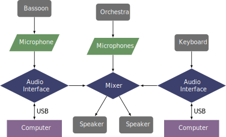

This piece was composed in 2014 and is one of the few pieces with orchestral accompaniment in this repertoire. The premiere was on October 12, 2014 at the New England Conservatory, performed by the Boston Modern Orchestra Project with Patrick De Ritis as the soloist. The orchestration is for two flutes (doubling on alto and bass flute), oboe (doubling on English horn), clarinet (doubling on bass clarinet), bass clarinet (doubling contrabass clarinet), bassoon, contrabassoon, two horns, two trumpets in C, two trombones, bass trombone, contrabass trombone (or tuba), three percussionists—featuring many non standard instruments—keyboard sampler, accordion, and strings. The piece can be obtained by contacting the composer at his website}.
The bassoon sound is fed through a single microphone into a Max/MSP patch for live signal processing. There is also a keyboard part that triggers audio samples instead of notes. In the premiere, the orchestra was also lightly amplified, but not processed. The patch is designed to be controlled by someone other than the performer. However, it could be programmed to allow the performer to advance through the patch.
A likely setup for this piece is shown below. However, there will likely need to be more speakers and monitors for the performers onstage. 
A screenshot of what the Max patch looks like when it is started is shown in the screenshots section. In the main window, there are controls for the levels of the dry sound, delayed sound, and the harmonized sound. To the right end are controls for the overall levels. The arrows at the top of the patch advance through the cues. If you click on the button in the top corner, you can control the patch with the up and down arrow keys. Note that this patch requires the CNMAT external package to be installed in Max/MSP.
This piece is difficult, both in the bassoon part and the orchestra part. It is probably beyond most university orchestras and most undergraduate bassoonists. It probably would be most successful with a graduate student or professional player with a professional orchestra. The Max patch is not difficult to run, but it should be run by someone other than the performer because of the difficulty of the music. The max patch operates six varying delay lines that all have separate parameters for feedback, volume, and pitch. There is also a harmonizer that works independently of the delays.
Riflessioni has a lot of chromaticism but also adds some lyrical playing as well. There are quotations of Tansman's Sonatine third movement and Isang Yun's Monolog, and they fit well within the piece. The piece would be accessible for many audiences.
©2024 by Benjamin Bradshaw
Logo ©2024 by Hannah Bradshaw